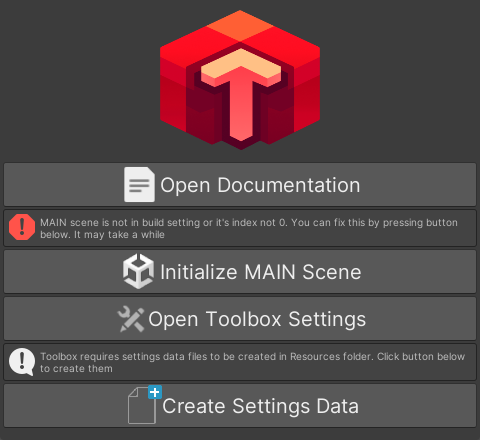

Setup
Once you install the package, you will see the setup screen:

If you don't see it, you can open it from Toolbox/Setup Screen.
First of all you need to initialize the main scene. Click the 'Initialize Main Scene' button to do this. This will add the 'MAIN' scene to the Assets/Scenes/ folder and include it in the build settings scenes list.
Toolbox requires some configuration assets to be added into resources folder. To do this simply click 'Create Settings Data', it will create required files automatically.
By default, the 'MAIN' scene should look like this:
On the Toolbox Entry component of the 'Toolbox Container' game object, make sure that the Initialize On Start boolean is enabled.
After all preparations are completed, you can open 'Toolbox Settings' by clicking 'Open Toolbox Settings' or accessing it from Toolbox/Settings.
To gain access to Toolbox's components, use Toolbox.[Class_You_Need].
Here are the classes available:
MessengerPoolerAudioPlayerTravelerUpdater